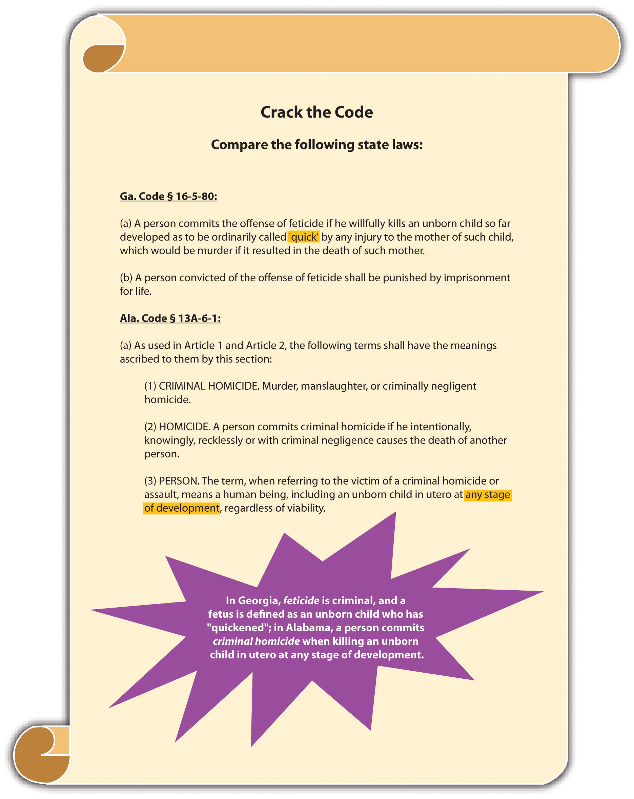
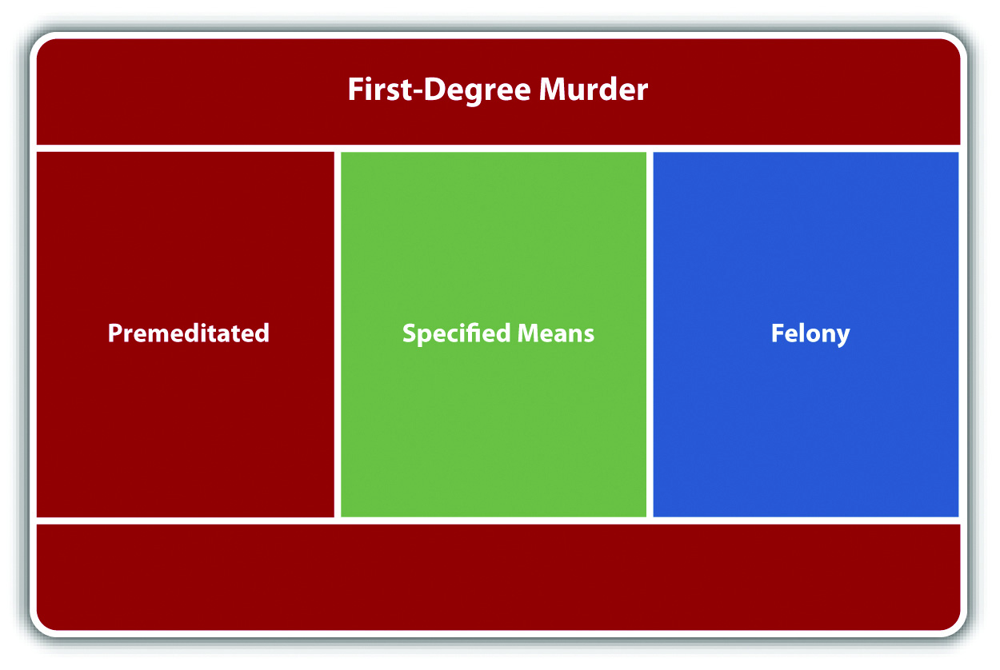
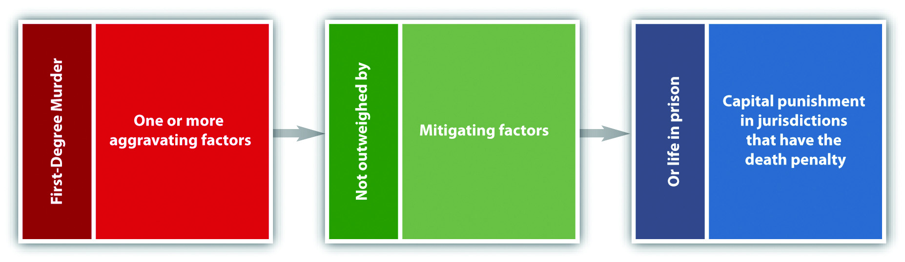
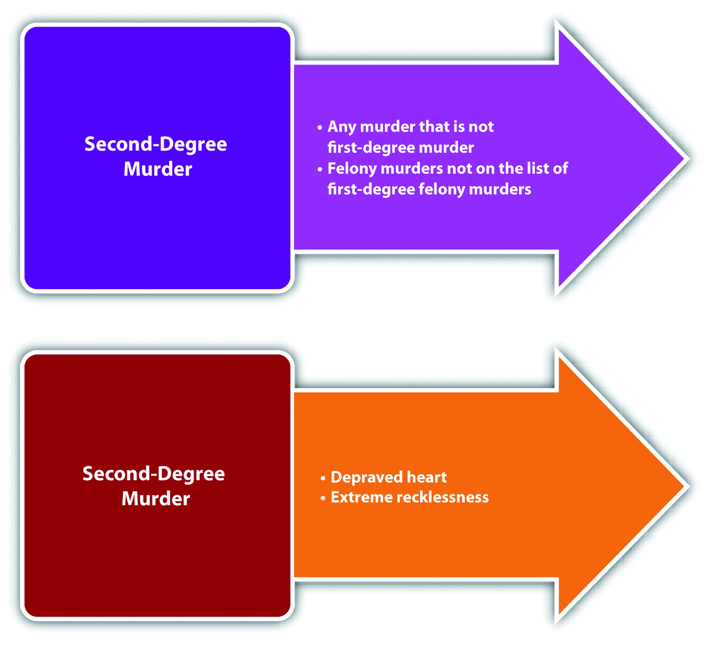
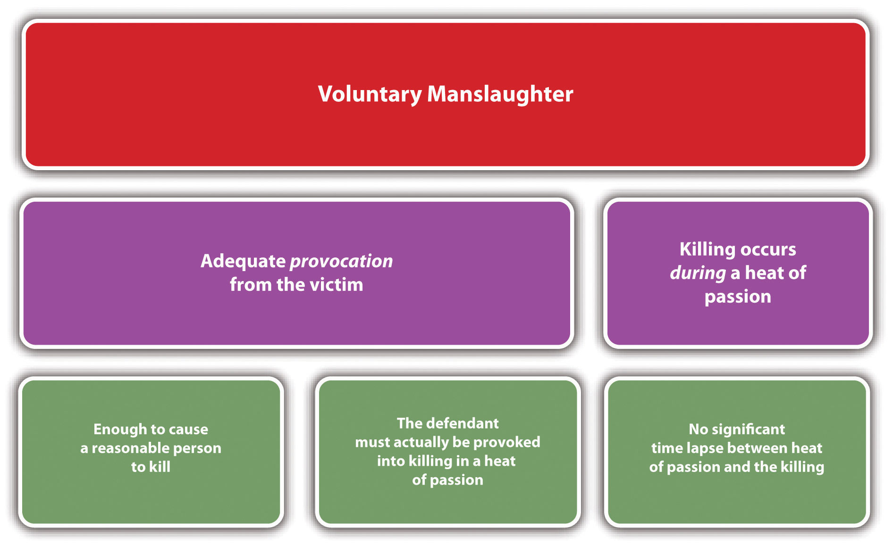
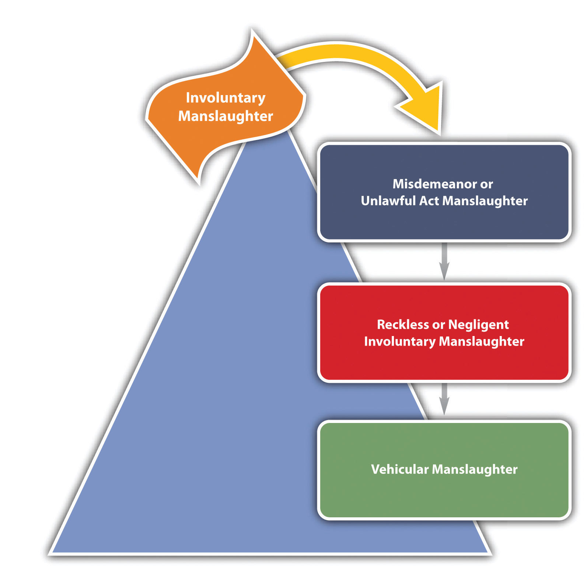
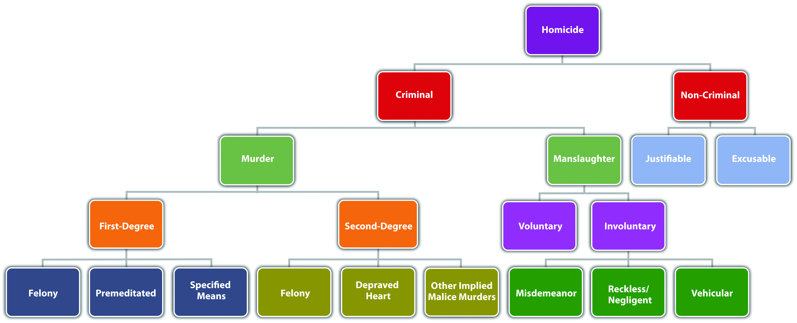

Source: Image courtesy of Tara Storm.
[W]hether it is made for the purpose of destroying animal life, or whether it was not made by man at all, or whether it was made by him for some other purpose, if it is a weapon, or if it is a thing with which death can be easily and readily produced, the law recognizes it as a deadly weapon…
Acers v. U.S., cited in Section 9 "Inference of Intent"
In this section, you learn the definition of homicideThe killing of one human being by another. and the meaning of human being, which vary from state to state. You also learn that suicide is not criminal, but assisted suicide might be, depending on the jurisdiction.
Homicide is the killing of one human being by another. Homicide is not always criminal. For example, a lawful execution pursuant to the death penalty is homicide, but it is not criminal homicide.
Homicide law in the United States has its origins in the English common law. Oxford professor Sir William Blackstone defined homicide as justifiable, excusable, or felonious. Justifiable homicides were not criminal because they did not include the concept of guilt. Excusable homicides were not criminal because they included minimal guilt. Felonious homicides were criminal and were considered the most heinous offenses known to man.
Initially at common law, every felonious or criminal homicide was punished by death. Gradually, as the law evolved, unlawful killings were divided into murder and manslaughter based on the defendant’s criminal intent. Murder had the criminal intent element of malice aforethought and remained a capital offense. Manslaughter was an unlawful killing without malice and was punished by incarceration.
In modern times, most states define criminal homicide and its elements in statutes, which often are interpreted by case law. Many jurisdictions continue to follow Blackstone’s philosophy and the common-law division between murder and manslaughter, as is discussed in this chapter.
An essential component of every criminal case, including criminal homicide, is corpus delictiThe substance of the case.. Corpus delicti is the substance of the crime at issue. The prosecution must prove corpus delicti beyond a reasonable doubt, with evidence other than a defendant’s confession.People v. Ochoa, 966 P.2d 442 (1998), accessed February 13, 2011, http://scholar.google.com/scholar_case?case=13299597995178567741&q= corpus+delicti+criminal+homicide&hl=en&as_sdt=2,5. Although a detailed discussion of corpus delicti is beyond the scope of this text, corpus delicti in a criminal homicide case consists of the death of a victim, caused by the defendant, in an unlawful manner.
Often the victim’s body is never discovered, which could make it more difficult for the prosecution to prove corpus delicti but not impossible. If there is sufficient circumstantial or direct evidence, such as bloodstains, surveillance footage, or witness testimony, the prosecution can prove corpus delicti without the victim’s body and can convict the defendant of criminal homicide.
FeticideThe intentional destruction of a fetus. is the intentional destruction of a fetus. At common law, a human being could not be the victim of criminal homicide unless it was born alive.Keeler v. Superior Court, 2 Cal.3d 619 (1970), accessed July 10, 2010, http://scholar.google.com/scholar_case?case=2140632244672927312&hl=en&as_sdt=2&as_vis=1&oi=scholarr. The Model Penal Code takes this approach and defines human being as “a person who has been born and is alive” (Model Penal Code § 210.0 (1)). The modern trend in many jurisdictions is to include the fetus as a victim in a criminal homicide or feticide statute, excepting abortion. The definition of fetus is either set forth in the criminal homicide or feticide statute or created by case law. Many states and the federal government consider an embryo a fetus from the time of conception.Ala. Code § 13A-6-1, accessed February 13, 2010, http://www.legislature.state.al.us/codeofalabama/1975/13A-6-1.htm. Other states determine that a fetus is formed when the child has “quickened,” or is able to move within the womb—about four to five months after conception.Fla. Stat. § 782.09, accessed July 10, 2010, http://www.lawserver.com/law/state/florida/statutes/florida_statutes_782-09. A few states do not consider the fetus a victim of criminal homicide or feticide until it is viable and can survive outside the womb.Ind. Code §35-42-1-1(4), accessed July 10, 2010, http://www.in.gov/legislative/ic/code/title35/ar42/ch1.html.
Figure 9.1 Crack the Code
At common law, suicide was a crime. The punishment was forfeiture of the lands owned by the deceased. In modern times, most states do not criminalize suicide. However, almost all jurisdictions make it a crime to assist a suicide, and the US Supreme Court has held these statutes constitutional.Washington v. Glucksberg, 521 U.S. 702 (1997), accessed July 10, 2010, http://scholar.google.com/scholar_case?case=17920279791882194984&q= Washington+v.+Glucksberg&hl=en&as_sdt=2,5. Several states have special statutes that specifically punish assisted suicide less severely than their first- or second-degree murder statutes.Tex. Penal Code § 22.08, accessed July 10, 2010, http://law.onecle.com/texas/penal/22.08.00.html. A minority of states allow terminally ill patients to end their lives with the assistance of a physician.Or. Rev. Stat. § 127.800 et seq., accessed July 10, 2010, http://law.onecle.com/oregon/127-powers-of-attorney-advance-directives/index.html. The Model Penal Code provides that “[a] person who purposely aids or solicits another to commit suicide is guilty of a felony of the second degree if his conduct causes such suicide or an attempted suicide” (Model Penal Code § 210.5(2)).
In modern times, in many jurisdictions feticide is a crime (excepting abortion), and suicide is not. At common law, the following applied:
Answer the following questions. Check your answers using the answer key at the end of the chapter.
Murder is a crime that has the elements of criminal act, criminal intent, causation, and harm. In this section, you learn the elements of murder. In upcoming sections, you learn the factors that classify murder as first degree, felony, and second degree.
Most jurisdictions define the criminal act element of murder as conduct that causes the victim’s death.N.Y. Penal Law § 125.27, accessed February 4, 2011, http://law.onecle.com/new-york/penal/PEN0125.27_125.27.html. The criminal act could be carried out with a weapon, a vehicle, poison, or the defendant’s bare hands. Like all criminal acts, the conduct must be undertaken voluntarily and cannot be the result of a failure to act unless a duty to act is created by common law or statute.
It is the criminal intent element that basically separates murder from manslaughter. At common law, the criminal intent element of murder was malice aforethoughtIntent to kill, which is the common-law intent for murder.. In modern times, many states and the federal government retain the malice aforethought criminal intent.Cal. Penal Code § 187, accessed February 4, 2011, http://law.justia.com/california/codes/2009/pen/187-199.html. The Model Penal Code defines murder intent as purposely, knowingly, or recklessly under circumstances manifesting extreme indifference to the value of human life (Model Penal Code § 210.2).
An exception to the criminal intent element of murder is felony murder. Most jurisdictions criminalize felony murder, which does not require malice aforethought or the Model Penal Code murder mental states. Felony murder is discussed shortly.
Malice, as used in the term malice aforethought, is not the intent to vex or annoy. Nor is it hatred of the victim. Malice exists when the defendant desires the victim’s death or is indifferent to whether the victim lives or dies. Malice is apparent in three criminal homicide situations: the defendant intends to kill the victim, the defendant intends to cause serious bodily injury to the victim, or the defendant has a depraved heartThe defendant is indifferent to whether the victim lives or dies. Also called abandoned and malignant heart. and does not care if the victim lives or dies.
The specific intent to kill the victim corresponds with the Model Penal Code’s purposely murder mental state and is often referred to as express maliceThe defendant intends to kill the victim..N.R.S. § 200.020(1), accessed February 13, 2011, http://law.onecle.com/nevada/crimes/200.020.html. The intent to cause serious bodily injury corresponds with the Model Penal Code’s knowingly or recklessly murder mental states and is often referred to as implied maliceThe defendant intends to cause serious bodily injury or is acting with a depraved heart.. Serious bodily injury is a technical term and is generally defined in a state statute or by case law. The Model Penal Code defines serious bodily injury as “bodily injury which creates a substantial risk of death or which causes serious, permanent disfigurement, or protracted loss or impairment of the function of any bodily member or organ” (Model Penal Code § 210.0(3)). The depraved heart intent is also implied maliceN.R.S. § 200.020(2), accessed February 13, 2011, http://law.onecle.com/nevada/crimes/200.020.html. and corresponds with the Model Penal Code’s knowingly or recklessly murder mental states, depending on the attendant circumstances.
Jay decides he wants to kill someone to see what it feels like. Jay drives slowly up to a crosswalk, accelerates, and then runs down an elderly lady who is crossing the street. Jay is acting with the intent to kill, which would be express malice or purposely.
Jay wants to injure Robbie, a track teammate, so that he will be the best runner in the high school track meet. Jay waits for Robbie outside the locker room and when Robbie exits, Jay attacks him and stabs him several times in the knee. Unfortunately, one of Jay’s stabbing wounds is in the carotid artery, and Robbie bleeds to death. Jay is acting with the intent to cause serious bodily injury, which would be implied malice, or knowingly or recklessly under circumstances manifesting extreme indifference to the value of human life.
Jay is angry at Brittany for turning him down when he asks her to the senior prom. Jay decides to teach Brittany a lesson. He knocks her unconscious as she walks home from school and then drives her out to a deserted field and dumps her on the ground. He thereafter leaves, feeling vindicated at the thought of her walking over ten miles to the nearest telephone. Brittany does not regain consciousness and spends the entire night in the field, where temperatures drop to 5°F. Brittany dies of exposure and acute hypothermia. Jay acts with the intent of depraved heart, also called abandoned and malignant heart. This criminal intent is another form of implied malice, or knowingly or recklessly under circumstances manifesting extreme indifference to the value of human life.
The term aforethought at common law meant that the defendant planned or premeditated the killing. However, this term has lost its significance in modern times and does not modify the malice element in any way. Premeditation is a factor that can elevate murder to first-degree murder, as is discussed shortly.
The deadly weaponAny instrumentality that can kill when used in a manner calculated to cause death or serious bodily injury. doctrine creates an inference of murder intent when the defendant uses a deadly weapon.People v. Carines, 597 N.W. 2d 130 (1999), accessed February 13, 2011, http://scholar.google.com/scholar_case?case=6441565823584670121&q= deadly+weapon+doctrine&hl=en&as_sdt=2,5. A judge may instruct the jury that they can infer the defendant intended the natural and probable consequences of the criminal act, which are death when a deadly weapon is utilized. This basically alleviates the burden of having to prove criminal intent for murder.
A deadly weapon is any instrumentality that can kill when used in a manner calculated to cause death or serious bodily injury.Acers v. United States, 164 U.S. 388 (1896), accessed February 13, 2010, http://scholar.google.com/scholar_case?case=16538901276155737856&hl=en&as_sdt=2&as_vis=1&oi=scholarr. The Model Penal Code defines deadly weapon as “any firearm, or other weapon, device, instrument, material or substance, whether animate or inanimate, which in the manner it is used or is intended to be used is known to be capable of producing death or serious bodily injury” (Model Penal Code § 210.0 (4)). Some examples of deadly weapons are knives, guns, broken bottles, or even bare hands if there is a discrepancy in the size of the attacker and the victim. Aside from creating an inference of intent for murder, use of a deadly weapon may also enhance a sentence for certain crimes.
There is always a causation analysis for murder. The defendant must be the factual and legal cause of a very specific harm—the victim’s death. Causation issues in murder are numerous. If a state has a one or three years and a day rule, this could complicate the causation scenario when a victim’s life is artificially extended. One and three years and a day rules are discussed in detail in Chapter 4 "The Elements of a Crime". In addition, co-felon liability could extend criminal responsibility to defendants that did not actually kill the victim, as is discussed shortly.
As stated previously, the harm element of murder is a victim’s death. With the advent of life-sustaining machines, jurisdictions have had to develop a definition for the term dead. A victim is legally deadThe victim experiences cessation of the entire brain, including the brain stem. when there is irreversible cessation of the entire brain, including the brain stem.Uniform Determination of Death Act, accessed February 14, 2010, http://www.gencourt.state.nh.us/rsa/html/X/141-D/141-D-mrg.htm.
Figure 9.2 Diagram of Murder

As Blackstone stated, murder cannot be justified or excused. Justifiable and excusable homicides are noncriminal, and thus justification or excuse can operate as an affirmative defense in many jurisdictions. A thorough discussion of defenses based on justification and excuse is in Chapter 5 "Criminal Defenses, Part 1" and Chapter 6 "Criminal Defenses, Part 2".
A justifiable homicide is a homicide that is warranted under the circumstances. One example of a justifiable homicide is when a law enforcement officer shoots and kills a fleeing felon to prevent imminent great bodily injury or death. This killing is intentional and purposeful with malice aforethought, but it is noncriminal. The justification negates the criminality and the law enforcement officer will not be convicted of murder. A complete discussion of use of deadly force by law enforcement to arrest or apprehend a criminal defendant is in Chapter 5 "Criminal Defenses, Part 1". Other murder defenses based on justification are self-defense, defense of others, and defense of habitation.
An excusable homicide is a homicide that society forgives or pardons. One example of an excusable homicide is a homicide committed by a defendant who is found legally insane. This killing could also be intentional and purposeful with malice aforethought, but it is noncriminal. The excuse negates the criminality and the defendant will not be convicted of murder. A complete discussion of the insanity defense is in Chapter 6 "Criminal Defenses, Part 2".
The criminal transmission of AIDS is a new and evolving topic with state and federal courts and criminal codes. Many jurisdictions have statutes specifying that death by the deliberate transmission of AIDS is murder because murder intent is present.Minn. Stat. Ann. § 609.2241, accessed February 24, 2010, https://www.revisor.mn.gov/statutes/?id=609.2241. Death by the inadvertent transmission of AIDS is more likely manslaughter, although modern courts could begin to imply malice or murder intent in this situation. For states that follow the one or three years and a day rule, the time limit could affect any murder or manslaughter charge because medical breakthroughs have extended the life span of AIDS victims significantly.
Table 9.1 Murder Rate in the United States: Percent Change January–December
| Years | Percent Change/Murder Rate |
|---|---|
| 2006/2005 | +1.8 |
| 2007/2006 | −0.6 |
| 2008/2007 | −3.9 |
| 2009/2008 | −7.2 |
Source: Department of Justice, “Crime in the United States; Preliminary Annual Uniform Crime Report,” accessed July 28, 2010, http://www.fbi.gov/ucr/prelimsem2009/table_3.html.
Answer the following questions. Check your answers using the answer key at the end of the chapter.
In this section, you analyze the factors that classify a murder as first-degree murderThe highest classification of murder; includes premeditated murder, serious felony murders, and murder by a specified means.. Keep in mind that the criminal act, criminal intent, causation, and harm elements of murder have already been discussed.
States and the federal government usually include premeditated murderA first-degree murder that combines specific intent to kill with calm planning and reflection., murder by a specified meansThe defendant uses a specific and heinous method to commit murder., and very serious felony murders in their first-degree murder statutes. Felony murder is discussed shortly.
Premeditated murder was originally and historically the predominant form of murder in any first-degree murder statute. A common statutory definition of first-degree premeditated murder is a willful, deliberate, premeditated killing.Mich. Comp. Laws § 750.316, accessed September 19, 2010, http://law.onecle.com/michigan/750-michigan-penal-code/mcl-750-316.html.
Most jurisdictions define willfulA term used in first-degree murder statutes that means a specific intent to kill. as a specific intent to kill, purposely, or express malice. Jurisdictions differ when interpreting deliberateA term used in first-degree murder statutes that means calm and methodical. and premeditatedA term used in first-degree murder statutes that means planned.. A minority of jurisdictions equate express malice or purposely with deliberation and premeditation, which means that the prosecution need only prove specific intent to kill for a first-degree premeditated murder conviction.Hawthorne v. State, 835 So. 2d 14 (2003), accessed September 19, 2010, http://scholar.google.com/scholar_case?case=6294577581180338458&hl=en&as_sdt=2&as_vis=1&oi=scholarr. However, this interpretation could blur the distinction between first and second-degree murder. The majority of jurisdictions have defined deliberate as calm and methodical, without passion or anger.People v. Anderson, 447 P.2d 942 (1968), accessed February 13, 2011, http://scholar.google.com/scholar_case?case=9215896464929219588&q= definition+of+deliberate+premeditated+murder&hl=en&as_sdt=2,5. Premeditated generally means the defendant reflected on the act or planned ahead.People v. Cole, 95 P.3d 811 (2004), accessed February 13, 2011, http://scholar.google.com/scholar_case?case=18037950298665209340&q= definition+of+deliberate+premeditated+murder&hl=en&as_sdt=2,5. In other words, if the defendant specifically intends to kill the victim and rationally, purposefully, takes steps that culminate in the victim’s death, the defendant has committed first-degree premeditated murder in many jurisdictions.
Often it is the act itself that proves the killing was willful, deliberate, and premeditated. If the killing is carried out in a manner that indicates a strong and calculated desire to bring about the victim’s death, the trier of fact can and often does conclude that the murder was premeditated.State v. Snowden, 313 P.2d 706 (1957), accessed September 19, 2010, http://scholar.google.com/scholar_case?case=16193283019378884065&hl=en&as_sdt=2&as_vis=1&oi=scholarr.
Most jurisdictions agree that an extended period of time is not a requirement of premeditation.Commonwealth v. Carroll, 412 Pa. 525 (1963), accessed February 18, 2010, http://scholar.google.com/scholar_case?case=13694151174720667465&hl=en&as_sdt=2&as_vis=1&oi=scholarr. Thus a murder can be premeditated and first degree even if it is conceived only moments before the actual killing.State v. Schrader, 302 SE 2d 70 (1982), accessed September 19, 2010, http://scholar.google.com/scholar_case?case=287453315188864266&hl=en&as_sdt=2&as_vis=1&oi=scholarr. Some jurisdictions do not require any appreciable time lapse between the formation of intent and the criminal act.State v. Snowden, 313 P.2d 706 (1957), accessed September 19, 2010, http://scholar.google.com/scholar_case?case=16193283019378884065&hl=en&as_sdt=2&as_vis=1&oi=scholarr.
Imagine that Joannie and her husband Tim are in a terrible fight in the kitchen. Tim tells Joannie that he is going to get a divorce and will thereafter seek full custody of their two young children. Joannie states, “Wait here. I need to go to the bathroom. I will be right back.” She walks down the hall, but goes into the bedroom, rather than the bathroom, and removes a handgun from the nightstand drawer. She then walks to the bathroom and flushes the toilet. Hiding the handgun in the pocket of her bathrobe, she walks back into the kitchen, removes it, and shoots Tim four times in the abdomen, killing him.
In this scenario, Joannie probably could be convicted of premeditated murder in most jurisdictions. Joannie shoots and kills Tim in a calm, methodical manner, evidencing deliberation. Her manufactured excuse and flushing of the toilet indicate planning. The act of shooting Tim four times shows that Joannie has a specific intent to kill and a strong and calculated desire to bring about Tim’s death. Note that timing is not an issue here. Even a few minutes are enough to carry out a premeditated murder if the proper facts are present.
Compare the previous example with this scenario. Frank, Dillon’s supervisor, calls Dillon into his office and fires him. Enraged, Dillon grabs a heavy brass paperweight from the top of Frank’s desk and strikes him in the forehead, killing him instantly. In this example, Dillon acts in anger, not calm, cool, reflection. The act of grabbing a heavy brass paperweight appears impulsive, not planned. There is no evidence to indicate that Dillon knew he would be fired or knew that there was a brass paperweight on Frank’s desk. In addition, the single blow to the head does not necessarily indicate that Dillon had a strong and calculated desire to kill Frank. Dillon’s conduct may be supported by murder intent (most likely implied malice, knowingly, or recklessly under circumstances manifesting extreme indifference to the value of human life), but there is no evidence of specific intent to kill, deliberation, or premeditation. Thus Frank’s killing would probably not be first-degree premeditated murder in most jurisdictions.
Murder by a specified means is a specific method of killing that is extremely heinous. Most states list the specified means in their first-degree murder statutes. Some examples of commonly included specified means are murder by drive-by shooting, destructive device like a bomb, weapon of mass destruction, ammunition designed to puncture a bulletproof vest, poison, torture, or lying in waitAn ambush-style killing., which is an ambush-style killing.Cal. Penal Code § 189, accessed February 18, 2010, http://law.onecle.com/california/penal/189.html. Note that all the aforementioned methods of killing involve premeditation to a certain extent and could also probably qualify as first-degree premeditated murder.
Figure 9.3 Diagram of First-Degree Murder
Most states divide murder into first and second degree.N.R.S. § 200.030, accessed February 13, 2011, http://law.onecle.com/nevada/crimes/200.030.html. Some states add a third degree of murder that generally includes less serious sentencing options.Pa. Cons. Stat. Ann. § 2502, accessed February 14, 2010, http://wings.buffalo.edu/law/bclc/web/pa2501.html. The Model Penal Code classifies all murders as felonies of the first degree (Model Penal Code § 210.2(2)).
First-degree murder is the highest classification of murder and results in the most extreme punishment available in a jurisdiction’s punishment scheme. If the jurisdiction allows for the death penalty, first-degree murder typically is the only crime against an individual that qualifies the defendant for execution.N.R.S. § 200.030(4) (a), accessed February 13, 2011, http://law.onecle.com/nevada/crimes/200.030.html. If the jurisdiction does not allow for the death penalty, first-degree murder often qualifies the defendant for life in prison.Mich. Comp. Laws § 750.316, accessed February 13, 2011, http://law.onecle.com/michigan/750-michigan-penal-code/mcl-750-316.html.
The US Supreme Court has held that criminal homicide is the only crime against an individual that can merit the death penalty.Kennedy v. Louisiana, 128 S. Ct. 2641 (2008), accessed September 21, 2010, http://www.law.cornell.edu/supct/html/07-343.ZO.html. A discussion of crimes against the government (such as treason) that merit the death penalty is in Chapter 13 "Crimes against the Government".
In states that allow capital punishment, first-degree murder with one or more aggravating factorA factor that may enhance the sentence for first-degree murder to the death penalty if the state allows for the death penalty.(s) is generally a capital offense. Examples of aggravating factors are killing more than one person, killing for financial gain, killing with a particularly heinous method, or killing a peace officer.Death Penalty Information Center, “Aggravating Factors for Capital Punishment by State,” accessed September 23, 2010, http://www.deathpenaltyinfo.org/aggravating-factors-capital-punishment-state. In general, the trier of fact must ensure that the aggravating factor(s) are not outweighed by mitigating factorA factor that may reduce a sentence from the death penalty to incarceration if it outweighs any aggravating factor(s).(s). Examples of mitigating factors are the youth of the defendant, the defendant’s lack of a criminal history, and the fact that the defendant was acting under extreme emotional or mental disturbance.Death Penalty Information Center, “Terry Lenamon’s List of State Death Penalty Mitigation Statutes,” accessed September 23, 2010, http://www.jdsupra.com/post/documentViewer.aspx?fid=d61d8c7b-896b-4c1a-bd87-f86425206b45.
Figure 9.4 Diagram of Capital Punishment
A jury convicted Scott Peterson of first-degree premeditated murder for the killing of his pregnant wife Laci Peterson. They also convicted him of second-degree murder for the killing of his unborn son Conner.Charles Montaldo, “Scott Peterson Guilty of first-degree murder,” About.com website, accessed July 15, 2010, http://crime.about.com/od/news/a/scott_peterson.htm. The governing statute was California Penal Code § 189.Cal. Penal Code § 189, accessed July 15, 2010, http://law.onecle.com/california/penal/189.html. After issuing the verdict, the jury sentenced Peterson to death based on the special circumstance of killing more than one person.Charles Montaldo, “The Peterson Verdict: Special Circumstances,” About.com website, accessed July 15, 2010, http://crime.about.com/od/news/a/scott_verdict.htm.
The prosecution was successful without direct evidence or proof of the cause of death.Charles Montaldo, “Scott Peterson Guilty of first-degree murder,” About.com website, accessed July 15, 2010, http://crime.about.com/od/news/a/scott_peterson.htm.
Congress was inspired by the Peterson case to pass the Unborn Victims of Violence Act, 18 U.S.C. § 1841,18 U.S.C. § 1841, accessed February 13, 2010, http://crime.about.com/gi/o.htm?zi=1/XJ&zTi=1&sdn=crime&cdn=newsissues&tm=435&gps=634_398_1276_788&f=10&tt= 2&bt=0&bts=0&zu=http%3A//www.nrlc.org/Unborn_Victims/UVVAEnrolled.html. creating the new federal crime of killing an unborn child.
Answer the following questions. Check your answers using the answer key at the end of the chapter.
Felony murderA criminal homicide that occurs during the commission or attempted commission of a specified felony. is a criminal homicide that occurs during the commission or attempted commission of a felony. Most states and the federal government include felony murder in their penal codes.18 U.S.C. § 1111, accessed February 4, 2011, http://codes.lp.findlaw.com/uscode/18/I/51/1111. However, it has not been universally adopted. The Model Penal Code does not include felony murder per se. It does suggest a rebuttable presumption that killings that occur during the commission of specified dangerous felonies exhibit recklessness under circumstances manifesting extreme indifference to the value of human life (Model Penal Code § 210.2(1)(b)).
What distinguishes felony murder from murder is the absence of the typical murder intent. The criminal intent element required for felony murder is the intent required for a felony that causes a victim’s death.
When the defendant commits a felony that is inherently dangerous to life, he or she does so knowing that some innocent victim may die. In essence, this awareness is similar to implied malice, knowingly, or recklessly under circumstances manifesting extreme indifference to the value of human life. What is difficult to justify is a conviction for felony murder when the felony is not inherently dangerous to life. Thus most jurisdictions limit the felony murder doctrine to felonies that create a foreseeable risk of violence or death. States that include nonviolent felonies in their felony murder statutes generally grade them as second- or third-degree felony murder.Fla. Stat. Ann. § 782.04[4], accessed February 18, 2010, http://law.onecle.com/florida/crimes/782.04.html.
Joaquin, who has just lost his job, decides to burn down his apartment building because he can’t afford to pay the rent. Joaquin carefully soaks his apartment with lighter fluid, exits into the hallway, and throws a lit, lighter-fluid-soaked towel into the apartment. He then runs outside to watch the entire building burn down. Several tenants die of smoke inhalation because of the fire. In jurisdictions that recognize felony murder, Joaquin can probably be charged with and convicted of murder for every one of these deaths.
In this example, Joaquin did not intend to kill the tenants. However, he did most likely have the criminal intent necessary for arson. Therefore, felony murder convictions are appropriate. Note that Joaquin exhibited extreme indifference to whether the tenants in the building lived or died, which could also constitute the criminal intent of implied malice or depraved heart.
It is common for more than one defendant to cooperate in the commission of a felony. Group participation in criminal conduct could constitute more than one crime—for example, conspiracy—and could also place criminal responsibility squarely on a defendant who did not commit the criminal act. The general rule for felony murder in many jurisdictions is that if one defendant kills a victim during the commission or attempted commission of a specified felony, all defendants involved in the felony are guilty of felony murder.State v. Hoang, 755 P.2d 7 (1988), accessed February 13, 2011, http://scholar.google.com/scholar_case?case=2216953450979337225&q= heart+attack+during+robbery+%22co+felon%22&hl=en&as_sdt=2,5.
Joe and Jane dream up a plan to rob a local bank. Joe is designated as the primary robber and is supposed to enter the bank and hand a note to the teller demanding all the money in her station. Jane’s role in the felony is to drive the getaway vehicle to the bank, wait outside the front door with the motor running, and transport Joe and the money back to their apartment after the bank transaction is completed. Joe takes a handgun hidden beneath his jacket into the bank. He passes the note to the teller, and she frantically summons a security guard. As the security guard starts to approach, Joe pulls out the gun. An elderly lady standing to the left of Joe suffers a heart attack and dies at the sight of the gun. In this case, Joe and Jane can probably be convicted of felony murder. Note that Jane did nothing to directly cause the victim’s death from a heart attack. However, Jane did drive the getaway vehicle with the criminal intent to commit robbery, so Jane is criminally responsible for the consequences in many jurisdictions.
Some jurisdictions provide an exception to co-felon liability for felony murder if the defendant did not actually commit the act that killed the victim and had neither knowledge nor awareness that a death might occur.N.Y. Penal Law § 125.25 (3), accessed February 18, 2010, http://law.onecle.com/new-york/penal/PEN0125.25_125.25.html.
Review the example with Joe and Jane in Section 9 "Example of Co-Felon Liability for Felony Murder". Change this example so that Jane is a teller at the local bank. Joe and Jane plan the “robbery” so that Jane is to pretend Joe is a customer, and hand Joe all the money in her station after he enters the bank unarmed and passes her a phony check made out to “cash.” Without informing Jane, Joe brings a gun into the bank, “just in case.” The security guard observes Jane handing Joe large amounts of cash. Suspicious, he begins to approach the station. Joe notices and frantically pulls out the gun and points it at the security guard. The elderly lady standing to the left of Joe suffers a heart attack and dies at the sight of the gun. In this example, Jane may have a valid defense to co-felon liability for the elderly lady’s death in some jurisdictions. Although Jane had the intent to commit theft, a trier of fact could determine that Jane had neither the knowledge nor awareness that a death might occur because she believed she was cooperating in a nonviolent offense. Thus it is possible that in certain jurisdictions only Joe is subject to a conviction of felony murder in this case.
Generally, if the felony is inherently dangerous to life, and the defendant or defendants intentionally create a situation that is likely to result in death, if death does result, each and every defendant is guilty of felony murder. In some jurisdictions, this criminal liability exists even when someone other than a co-felon kills the victim.People v. Hernandez, 82 N.Y.2d 309 (1993), accessed February 18, 2010, http://scholar.google.com/scholar_case?case=3094702040122584711&q= People+v.+Hernandez+82+N.Y.2d+309&hl=en&as_sdt=2,5. Review the bank robbery committed by Joe and Jane, as discussed in Section 9 "Example of Co-Felon Liability for Felony Murder". If the security guard takes a shot at Joe but misses and kills the bank teller instead, both Joe and Jane are guilty of the bank teller’s death pursuant to this interpretation of the felony-murder doctrine.
Some jurisdictions relieve a defendant from criminal liability for felony murder if the death is the death of a co-felon, rather than a completely innocent victim.State v. Canola, 73 N.J. 206 (1977), accessed February 18, 2010, http://www.audiocasefiles.com/acf_cases/8722-state-v-canola. In the case of Joe and Jane discussed in Section 9 "Example of Co-Felon Liability for Felony Murder", if the security guard shoots and kills Joe in a jurisdiction that recognizes this exception, Jane is not guilty of felony murder.
Another important aspect that must be analyzed in any felony murder case is the concurrence of the felony and the death of the victim. The felony and the death must be part and parcel of the same continuous transaction. Therefore, there must be a determination of (1) when the felony begins and (2) when the felony ends. If the death occurs before or after the commission or attempted commission of the felony, the defendant might not be guilty of felony murder.
Carlos shoots and kills his drug dealer in a fit of temper because the drugs he bought are placebo. After the killing, it occurs to Carlos that the drug dealer might be carrying significant amounts of cash. Carlos thereafter steals some cash from the drug dealer’s pockets and runs off. Although this killing is probably murder, it is not felony murder. Carlos stole money from his drug dealer, but the theft occurred after the murder. Thus the killing did not happen during a robbery. If premeditation is proven, this could still be first-degree murder, but it is not first-degree felony murder.
More commonly, the issue is whether the killing occurs after the felony ends. The general rule is that the felony ends when the defendant has reached a place of temporary safety.People v. Young, 105 P.2d 487 (2005), accessed February 18, 2010, http://scholar.google.com/scholar_case?case=5918096649976465300&q= felony+murder+%22temporary+safety%22&hl=en&as_sdt=2,5. This place does not have to be the defendant’s residence; it could simply be a hiding place. Pursuant to this rule, a death that occurs during a car chase as the defendants flee the scene of the crime is considered felony murder.Del. Code Ann. Tit. 11 § 636 (a) (2), accessed February 18, 2010, http://law.justia.com/delaware/codes/title11/c005-sc02.html.
Figure 9.5 Diagram of Felony Murder

Felony murder can be first, second, or third degree.Fla. Stat. Ann. § 782.04, accessed February 18, 2010, http://law.onecle.com/florida/crimes/782.04.html. Some common examples of felonies listed in first-degree murder statutes are arson, rape, carjacking, robbery, burglary, kidnapping, and certain forcible sexual felonies.Cal. Penal Code § 189, accessed February 18, 2010, http://law.onecle.com/california/penal/189.html.
Answer the following questions. Check your answers using the answer key at the end of the chapter.
States that classify murder as either first or second degree often define second-degree murderAny murder that is not first-degree murder, including implied malice and depraved heart murders. as any murder that is not first-degree murder.Mich. Comp. Laws § 750.317, accessed February 24, 2010, http://www.legislature.mi.gov/(S(gjc5ys55et3ukfj0uq5uehqm))/mileg.aspx?page=GetObject&objectname=mcl-750-317. This definition excludes murders that are premeditated or committed with a specified means. It includes implied malice murder, such as murder committed with the intent to inflict serious bodily injury and depraved heart murder.
Some statutes use the Model Penal Code’s language and define second-degree murder as a killing executed recklessly, under circumstances manifesting extreme indifference to the value of human life.K.S.A. § 21-3402, accessed September 21, 2010, http://kansasstatutes.lesterama.org/Chapter_21/Article_34/21-3402.html. This definition embodies the concept, discussed previously, of murders committed with a depraved or abandoned and malignant heart. The facts that give rise to this type of second-degree murder often indicate the mens rea of recklessness, rather than purposeful or knowing intent or express malice. Whether the killing is a second-degree murder or manslaughter is left to the trier of fact and often rests on the degree of recklessness exhibited. If the defendant’s conduct indicates extreme indifference to life, the killing is a depraved heart murder. If the defendant’s conduct is simply reckless, the killing is manslaughter. As the Model Penal Code states in its comments, “[w]hether recklessness is so extreme that it demonstrates similar indifference is not a question, it is submitted, that can be further clarified. It must be left directly to the trier of fact under instructions which make it clear that recklessness that can fairly be assimilated to purpose or knowledge should be treated as murder and that less extreme recklessness should be punished as manslaughter” (A.L.I., Model Penal Code & Commentaries Part II § 210.2, Comment. 4, pp. 21–22 (1980)).
After watching his fifth-grade daughter play softball, Doug attends a party with her team and other parents at the local pizza parlor. Doug’s daughter leaves the party with her mother, Doug’s ex-wife. Doug consumes ten beers and then leaves the party and smokes some crack cocaine in his vehicle. He thereafter begins driving home. As he is driving in a busy section of town, he hears his phone beep, indicating the receipt of a text message. He grabs his phone and starts reading the text. This lapse of attention causes him to run a red light and broadside a vehicle turning left in front of him, killing a child sitting in the passenger seat. Doug puts his vehicle in reverse, drives around the car he hit, and leaves the scene of the accident. These facts could give rise to a conviction for depraved heart second-degree murder. Although Doug did not act with specific intent to kill, his conduct in driving while under the influence of alcohol and crack cocaine, reading a text message while driving impaired in a busy part of town, and leaving the scene of an accident most likely elevate Doug’s intent from ordinary recklessness to recklessness indicating extreme indifference to the value of human life. Thus the trier of fact could find Doug guilty of murder rather than manslaughter in this case.
Figure 9.6 Diagram of Second-Degree Murder
Most jurisdictions grade second-degree murder lower than first-degree murder and include less serious sentencing options.N.R.S. § 200.030, accessed February 13, 2011, http://law.onecle.com/nevada/crimes/200.030.html. Most jurisdictions grade second-degree murder higher than manslaughter because it has a more heinous criminal intent.N.R.S. § 200.080, accessed February 13, 2011, http://law.onecle.com/nevada/crimes/200.080.html. Manslaughter is discussed shortly.
Answer the following questions. Check your answers using the answer key at the end of the chapter.
What distinguishes murder from manslaughter is the criminal intent element. Manslaughter is an unlawful killing without malice or murder intent.N.R.S. § 200.040, accessed February 13, 2011, http://law.onecle.com/nevada/crimes/200.040.html. The criminal act, causation, and harm elements of manslaughter and murder are fundamentally the same. Thus criminal intent is the only manslaughter offense element that is discussed in this section.
Manslaughter has two basic classifications: voluntary and involuntary. Voluntary manslaughterA killing that occurs during a heat of passion adequately provoked by the victim. has the same criminal intent element as murder. In fact, a voluntary manslaughter killing is typically supported by express malice, specific intent to kill, or purposely. However, in a voluntary manslaughter, an emotional state called a heat of passionThe turbulent mental state that negates murder intent in a voluntary manslaughter. negates the murder intent. An adequate provocationA provocation from the victim that would goad a reasonable person into a heat of passion, negating murder intent. from the victim inspires the heat of passion.Tenn. Code Ann. § 39-13-211, accessed February 24, 2010, http://www.lexisnexis.com/hottopics/tncode. The Model Penal Code does not require adequate provocation from the victim per se, but it does have a similar provision that reduces murder to manslaughter when there is a reasonable explanation or excuse (Model Penal Code § 210.3(1)(b)).
The adequacy requirement is essential to any voluntary manslaughter analysis. Many defendants are provoked and thereafter kill with murder intent. Nonetheless, most provocations are not adequate to drop the crime from murder to manslaughter. The victim’s provocation must be serious enough to goad a reasonable person into killing.People v. Steele, 47 P.2d 225 (2002), accessed February 13, 2011, http://scholar.google.com/scholar_case?case=18208208560981664037&q= voluntary+manslaughter+reasonable+person+adequate+provocation&hl=en&as_sdt=2,5. A reasonable person is a fictional and objective standard created by the trier of fact. Of course, the defendant must actually be provoked, which is a subjective standard.People v. Steele, 47 P.2d 225 (2002), accessed February 13, 2011, http://scholar.google.com/scholar_case?case=18208208560981664037&q= voluntary+manslaughter+reasonable+person+adequate+provocation&hl=en&as_sdt=2,5.
Revisit the situation discussed in Section 9 "Example of a Spontaneous Killing", in which Dillon kills his supervisor Frank with a brass paperweight after Frank fires him. Clearly, Frank’s conduct provokes Dillon into killing Frank. However, getting fired would not provoke a reasonable person into a killing frenzy. In fact, reasonable people are fired all the time and learn to live with it peacefully. Therefore, in this example, Dillon’s crime is most likely murder, not voluntary manslaughter.
A traditional example of provocation that is adequate to reduce a crime from murder to manslaughter is an observation by one spouse of another spouse in the act of adultery.Ohio v. Shane, 63 Ohio St.3d 630 (1992), accessed February 24, 2011, http://scholar.google.com/scholar_case?case=8752055493993855988&q= voluntary+manslaughter+spouse+act+of+adultery&hl=en&as_sdt=2,5. For example, José comes home from work early and catches his wife in bed with his best friend. He becomes so enraged that he storms over to the dresser, grabs his handgun, and shoots and kills her. Clearly, José acts with intent to kill. However, the victim provoked this intent with an act that could cause a reasonable person to kill. Thus José has probably committed voluntary manslaughter in this case, not murder.
Other examples of adequate provocation are when the homicide victim batters the defendant and a killing that occurs during a mutual combat.Ohio v. Shane, 63 Ohio St.3d 630 (1992), accessed February 24, 2011, http://scholar.google.com/scholar_case?case=8752055493993855988&q= voluntary+manslaughter+spouse+act+of+adultery&hl=en&as_sdt=2,5. Cases have generally held that words alone are not enough to constitute adequate provocation.Girouard v. State, 583 A.2d 718 (1991), accessed February 24, 2011, http://www.audiocasefiles.com/acf_cases/8711-girouard-v-state. Thus in the adequate provocation example in Section 9 "Example of Adequate Provocation", if a friend told José that his wife was committing adultery, and José responded by shooting and killing his wife, this would probably be murder, not voluntary manslaughter.
The second requirement of voluntary manslaughter is that the killing occur during a heat of passion. Defendants generally exhibit rage, shock, or fright when experiencing a heat of passion. This emotional state negates the calm, deliberate, intent to kill that supports a charge of murder. However, heat of passion mental states are typically brief in duration. Thus there cannot be a significant time lapse between the victim’s provocation and the killing.State v. Cole, 338 S.C. 97 (2000), accessed March 1, 2010, http://www.judicial.state.sc.us/opinions/htmlfiles/SC/25037.htm. Analyze the adequate provocation example discussed in Section 9 "Example of Adequate Provocation". If José waits until the next day to shoot and kill his wife, the crime is most likely premeditated first-degree murder, not voluntary manslaughter.
Figure 9.7 Diagram of Voluntary Manslaughter
Involuntary manslaughterMisdemeanor manslaughter, reckless involuntary manslaughter, negligent involuntary manslaughter, or vehicular manslaughter. is an unlawful killing that completely lacks murder intent. Involuntary manslaughter is distinguishable from voluntary manslaughter, which generally includes a murder intent that has been negated. Involuntary manslaughter generally can be classified as misdemeanor manslaughterA criminal homicide that occurs during the commission or attempted commission of a misdemeanor., reckless or negligent involuntary manslaughterA killing that is supported by the criminal intent element of recklessness or negligence., or vehicular manslaughterA killing that is carried out with a vehicle and lacks murder intent..
Misdemeanor manslaughter, also called unlawful act manslaughter, is a criminal homicide that occurs during the commission or attempted commission of a misdemeanor. The Model Penal Code completely rejects misdemeanor manslaughter. There is a trend to follow the Model Penal Code’s example and abolish misdemeanor manslaughter. Most states that prohibit misdemeanor manslaughter only include misdemeanors that are inherently dangerous to life in the criminal statute, excluding strict liability misdemeanors or malum prohibitum crimes.K.S.A. § 21-3404 (b), accessed July 28, 2010, http://kansasstatutes.lesterama.org/Chapter_21/Article_34/21-3404.html. A minority of states and the federal government include strict liability or malum prohibitum crimes in their misdemeanor manslaughter statutes.21 O.S. § 711(1), accessed July 28, 2010, http://www.oscn.net/applications/oscn/DeliverDocument.asp?CiteID=69314. In either jurisdiction, the defendant need only possess the criminal intent for the misdemeanor to be guilty of the killing.
Roberta points an unloaded gun at Jennifer to scare her into breaking up with Roberta’s ex-boyfriend. This crime is called brandishing a weapon and is often classified as a misdemeanor. At the sight of the gun, Jennifer suffers a heart attack and dies. Roberta has most likely committed misdemeanor manslaughter in this case. Brandishing a weapon is not always inherently dangerous to life. However, if Jennifer has a heart attack and dies because of Roberta’s commission of this misdemeanor offense, Roberta still could be criminally responsible for misdemeanor manslaughter in many jurisdictions.
States and the federal government also criminalize reckless or negligent involuntary manslaughter.Ala. Code § 13A-6-3(a) (1), accessed February 13, 2011, http://law.onecle.com/alabama/criminal-code/13A-6-3.html. Reckless or negligent involuntary manslaughter is a more common form of manslaughter than misdemeanor manslaughter. The Model Penal Code defines reckless homicide as manslaughter and a felony of the second degree (Model Penal Code § 210.3). The Model Penal Code defines negligent homicide as a felony of the third degree (Model Penal Code § 210.4).
Reckless involuntary manslaughter is a killing supported by the criminal intent element of recklessness. Recklessness means that the defendant is aware of a risk of death but acts anyway. Negligent involuntary manslaughter is a killing supported by the criminal intent element of negligence. Negligence means that the defendant should be aware of a risk of death, but is not. This category includes many careless or accidental deaths, such as death caused by firearms or explosives, and a parent’s failure to provide medical treatment or necessities for his or her child. Reckless and negligent criminal intent is discussed in detail in Chapter 4 "The Elements of a Crime".
As stated in Section 9.5.1 "Depraved Heart Murder", reckless or negligent involuntary manslaughter is often similar to second-degree depraved heart murder. If the prosecution charges the defendant with both crimes, the trier of fact determines which crime is appropriate based on the attendant circumstances.
Steven, an off-duty sheriff’s deputy, brings his shotgun into the local rifle shop to be repaired. Steven thinks that the shotgun is unloaded and hands it to the employee with the safety off. Unfortunately, the gun is loaded and discharges, shooting and killing the employee. In this case, Steven should know that at certain times the safety on his shotgun must always be on because he is a registered gun owner and a sheriff’s deputy who has been trained to handle guns. However, Steven is unaware of the risk and believes that the gun is unloaded. If the employee dies, Steven could be convicted of negligent involuntary manslaughter in jurisdictions that recognize this crime. If Steven is in a jurisdiction that only recognizes reckless involuntary manslaughter, the prosecution may have to prove a higher degree of awareness, such as Steven’s knowledge that the shotgun was loaded.
Vehicular manslaughter is typically either the operation of a motor vehicle with recklessness or negligence resulting in death or the operation of a motor vehicle under the influence of alcohol or drugs resulting in death.N.Y. Penal Law § 125.12, accessed March 5, 2010, http://wings.buffalo.edu/law/bclc/web/NewYork/ny3%28a%29%281%29-.htm. Some states have specific vehicular manslaughter statutes.Cal. Penal Code § 191.5, accessed February 7, 2011, http://law.onecle.com/california/penal/191.5.html. In states that do not, the defendant could be prosecuted under a jurisdiction’s misdemeanor or unlawful act manslaughter statute if the defendant violates a vehicle code section. Vehicular manslaughter can also be prosecuted under a jurisdiction’s reckless or negligent involuntary manslaughter statute, depending on the circumstances. If the defendant uses a motor vehicle as a weapon to kill the victim, the intent to kill is present and the appropriate crime would be murder.
Figure 9.8 Diagram of Involuntary Manslaughter
Voluntary and involuntary manslaughter typically have a more lenient punishment scheme than murder because the criminal intent is less heinous.N.R.S. § 200.080, accessed February 13, 2011, http://law.onecle.com/nevada/crimes/200.080.html. Often manslaughter functions as an imperfect defense to murder, based on the less serious sentencing options. In general, voluntary manslaughter is graded higher than involuntary manslaughter.N.R.S. § 200.090, accessed February 13, 2011, http://law.onecle.com/nevada/crimes/200.090.html. Some states divide manslaughter into degrees, rather than classifying it as voluntary and involuntary, with first-degree manslaughter punished more severely than second-degree manslaughter.N.Y. Penal Law §125.20, accessed February 24, 2011, http://ypdcrime.com/penal.law/article125.htm#125.20. The Model Penal Code grades all manslaughter as a felony of the second degree (Model Penal Code § 210.3(2)) and grades negligent homicide as a felony of the third degree (Model Penal Code § 210.4(2)).
Figure 9.9 Diagram of Homicide
Answer the following questions. Check your answers using the answer key at the end of the chapter.
Should Killing an Abortion Doctor Be Voluntary Manslaughter?
Scott Roeder left his pew during a church service, walked up to a well-known abortion doctor, and deliberately shot him in the head, killing him. During Roeder’s trial for first-degree premeditated murder, the defense asked the court to allow a second charge of voluntary manslaughter. The defense claimed that defendant Roeder was acting in defense of others in the attempt to save the lives of unborn children.“Man Testifies he Killed Kansas Abortion Doctor,” USA Today, accessed July 27, 2010, http://www.usatoday.com/news/nation/2010-01-28-tiller-murder-trial_N.htm.
Check your answer using the answer key at the end of the chapter.
Scott Roeder Convicted of Murder
Scott Roeder’s murder verdict is shown in this video:
Homicide is the killing of one human being by another. Criminal homicide is either murder or manslaughter. Some states and the federal government also criminalize the killing of a fetus. Suicide is usually not criminal, although assisted suicide could be.
Many jurisdictions follow the common law and define murder as the killing of a victim with malice aforethought. Malice can be either a specific intent to kill, which is express malice, or the intent to do serious bodily injury, or depraved heart, which is implied malice. The Model Penal Code defines murder intent as purposely, knowingly, or recklessly under circumstances indicating extreme indifference to life. A killing by the transmission of AIDS can either be murder, if the transmission is deliberate, or manslaughter, if the transmission is inadvertent.
Most jurisdictions divide murder into degrees of seriousness. First-degree murder is the most serious, can merit the death penalty in certain jurisdictions, and generally includes premeditated murder, murder by a specified means, and serious felony murders. Premeditated murder is typically a killing supported by specific intent to kill combined with cool reflection and planning. Murder by a specified means is killing with a specific heinous method. Felony murder is a homicide that occurs during the commission or attempted commission of a felony. Felony murder lacks murder intent; the defendant need only possess the intent required for the felony. Felony murder can be graded as first, second, or third degree, depending on the felony. The Model Penal Code classifies all murders as first-degree felonies.
Second-degree murder is often defined as any murder that is not first degree. Typically, second-degree murder intent is the intent to inflict serious bodily injury or a depraved heart intent. Second-degree murder is usually graded lower than first-degree murder but higher than manslaughter.
In many jurisdictions, manslaughter is an unlawful killing without murder intent. Most jurisdictions divide manslaughter into voluntary and involuntary. The Model Penal Code classifies all manslaughters as felonies of the second degree. Voluntary manslaughter is a killing that occurs during a heat of passion inspired by adequate provocation from the victim, negating murder intent. Involuntary manslaughter can be a killing that occurs during the commission or attempted commission of a misdemeanor or a reckless or negligent killing, depending on the jurisdiction. Involuntary manslaughter can also be vehicular manslaughter when the killing occurs while driving a vehicle recklessly, negligently, or under the influence of alcohol or drugs. The Model Penal Code classifies negligent killings as negligent homicide and a felony of the third degree.
Read the prompt and then decide whether you would affirm or reverse the lower court. Review the case and see how the judges or justices actually ruled. Check your answers using the answer key at the end of the chapter.
From Section 9.2 "Murder"
From Section 9.3 "First-Degree Murder"
The Tennessee Supreme Court held that the defendant’s failure to make a timely police report and concealment of the murder weapon did not prove that the murder was premeditated. The Court stated the following:
One who has recently killed another person recklessly, passionately, or even negligently may be extremely hesitant to reveal the details of the crime, and yet not be guilty of first-degree murder…One who kills another in a passionate rage may dispose of the weapon when reason returns just as readily as the cool, dispassionate killer.State v. West, 844 S.W. 2d 144, 147 (1992), accessed July 30, 2010, http://scholar.google.com/scholar_case?case=3481778471457660977&hl=en&as_sdt=2002&as_vis=1.
From Section 9.4 "Felony Murder"
From Section 9.5 "Second-Degree Murder"
From Section 9.6 "Manslaughter"